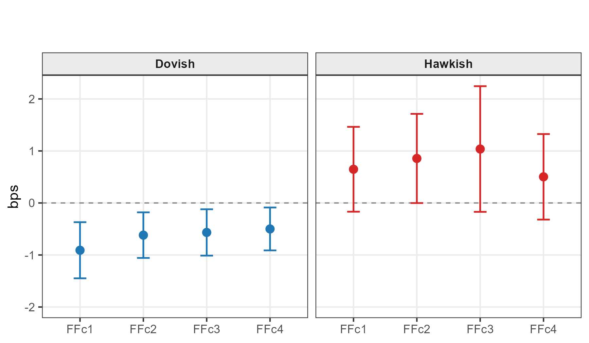
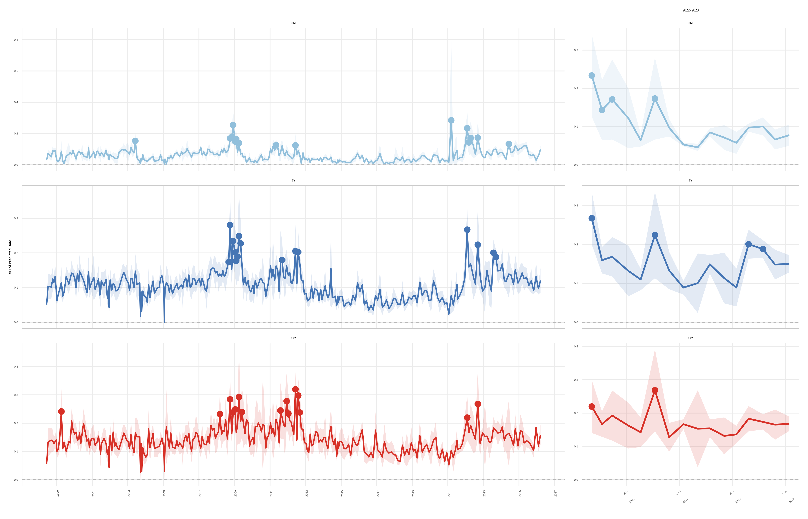

Published
Working papers
Jawboning the Fed: Do Markets Listen When Administrations Talk?
Dovish presidential pressure cuts near-term rate expectations ~1 bp per event, with breakevens unmoved. Hawkish pressure has no effect.

Interpreting the Interpreter: Can We Model post-ECB Conferences Volatility with LLM Agents?
30 simulated LLM traders read ECB press conferences; their disagreement correlates ~0.5 with realised OIS volatility across 293 meetings.

Real GDP Forecasts by International Organisations
Compares international organisations' growth forecasts with other forecasters, tests their rationality and asks why it is rejected.

Crumbs Make a Loaf: Using Online Product Prices to Nowcast Inflation
Over 2,700 products and two million daily web-scraped supermarket prices, classified with string matching and LLMs, improve out-of-sample nowcasts of Maltese food inflation — about 16% of the HICP.
Policy papers
The IMF's Forecasting and Policy Advice Formulation Processes
Background paper to the IEO evaluation of the IMF's COVID-19 emergency response, examining how the Fund produced its forecasts and formulated policy advice during the crisis.